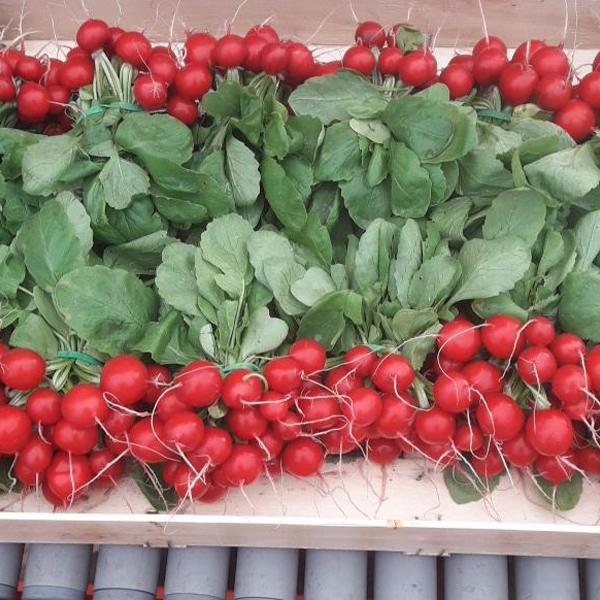
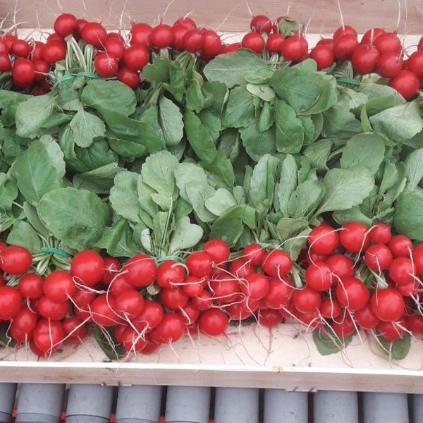
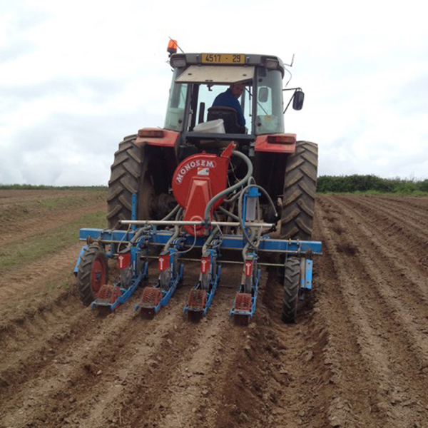
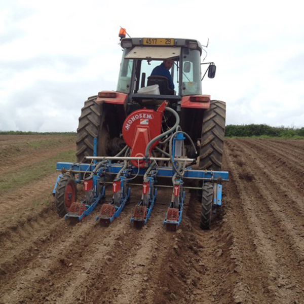

Nos Producteurs

Romain Le Bozec
Ferme ty coz c'est une grande histoire de Famille. Gwénaël le patriarche est paysan depuis ses quinze ans, mais après mûre réflexion il a converti en 1996, avec Anne, sa femme, la ferme en bio. Voyant dans le bio, le sauvetage de son exploitation & la bonne santé de sa famille. Les fils, Julien, Eric & Tanguy se sont intégrés à l'histoire. Eric & Tanguy en développant le plein champ avec leurs parents & Julien en créant des serres pour élargir la gamme de légumes. En 2015, Estelle a mis son grain de sel dans le commerce et voilà Ferme ty coz est là, disponible pour vous servir toute l'année en beaux et bons légumes bio ! Il y aussi Anne, la sœur de Gwénaël, qui elle s'occupe des particuliers en faisant la vente à la ferme le mercredi matin, vendredi après-midi et samedi matin. (le facebook de la vente à la ferme facebook/fermetycoz). Et puis toutes les petites mains qui nous aident toute l'année à semer, planter, désherber, récolter ... C'est aussi grâce à nos salariés qu'aujourd'hui nous avons de beaux légumes ! Toute notre histoire réside en une volonté d'un avenir meilleur dans nos assiettes et aussi pour nos papilles.
 

Mode de production
Nous faisons partie de la coopérative de producteurs bretons Biobreizh. C'est un cahier des charges encore plus stricte que le cahier des charges biologique Européen. Quelques points : - Respect de la saisonnalité des légumes, interdiction de chauffer les serres. - Diminution de la dose autorisée du cuivre à l'hectare (5 kg au lieu de 6). - Interdiction de l'utilisation de variétés CMS - Interdiction de ferti-irrigation, c'est à dire ne pas mettre d'engrais dans l'eau d'arrosage des plants.
Lutte intégrée
Contre les insectes nous faisons ce que l'on appelle de la lutte intégrée. C'est à dire que l'on apporte des auxiliaires dans les serres. Ce sont des insectes qui se nourrissent des ravageurs de nos cultures comme par exemple les pucerons ou aleurodes. Pour aider la pollinisation des tomates, nous mettons en place des ruches de bourdons, qui contrairement à nos amies les abeilles, sont beaucoup moins agressifs envers les personnes qui prennent soin des plants.
Notre sol
Pour enrichir notre sol, nous mettons principalement du fumier de bovin, du compost de déchets verts mélangé à de l'algue marine fraiche et des engrais organiques type potasse naturelle, guano d'oiseaux marins etc.
Variétés
L'utilisation de variétés résistantes au mildiou notamment en échalotes et en pomme de terre est une chose primordiale en agriculture biologique. Le choix variétal ne fait pas tout, nous sommes parfois obligés d'utiliser de la bouillie bordelaise qui permet de ralentir la progression de la maladie.
Machines
Nous sommes mécanisés à l'arrachage et au lavage pour mieux répondre à vos besoins et faire face à notre climat parfois pluvieux.

 
